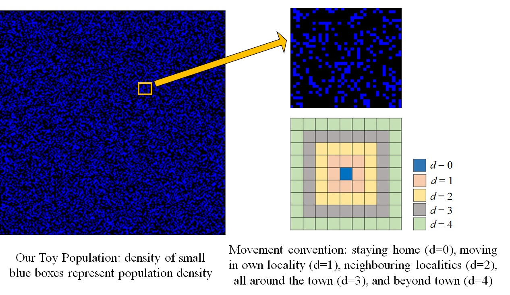

জীবাণুদের কাহিনী
খেলনা শহরে করোনা
দ্বিতীয় অধ্যায়
পৃথিবী জুড়ে করোনার দাপট আর আতঙ্ক চলছে সমানে; কিন্তু তার সাথে সাথে ভারতের প্রত্যেকটি মানুষ লকডাউন সংক্রান্ত নানা সংশয় নিয়ে প্রতিটা দিন কাটাচ্ছে। ২৪শে মার্চ, ২০২০ মাননীয় প্রধানমন্ত্রী ঘোষণা করলেন একুশ’দিনের লকডাউন, আর সেই থেকেই সোশাল মিডিয়া ছেয়ে যাচ্ছে বিভিন্ন মতামতে। লকডাউনের এই দিনক’টিতে নিজেদের কতরকম চরিত্র দেখা হল আমাদের; একদিকে যেমন দেখলাম মানুষ কত’টা ধৈর্য্যশীল হতে পারে এই সামাজিক দায়িত্ব’টির ব্যাপারে, অন্যদিকে এ’ও দেখলাম মানুষ কতখানি অবিবেচক হতে পারে! জানলাম এই নতুন পরিস্থিতি’তে নিজেদের কত নতুন ভাবে আবিষ্কার করতে পারি, আর এ’ও জানলাম পরিস্থিতির সাথে মানিয়ে না নিতে পারলে তার পরিণতি কত’টা ভয়ানক হতে পারে!
লকডাউন বাড়ার দোরগোড়ায় এখন আমরা সকলে দাঁড়িয়ে আছি কতগুলো জটিল প্রশ্নের মুখোমুখি। কি রয়েছে আমাদের সামনে? কি করা উচিত? একদিকে যেমন এই একুশ’টি দিন হয়তঃ মারাত্মক আঘাত হেনেছে দেশের অর্থনীতির ওপরে; সরকারের দিনরাতের চেষ্টা সত্ত্বেও, অসংখ্য মানুষ অপরিসীম কষ্টের মধ্যে পড়েছেন। দেশ জুড়ে কে জানে কত লোক কোনো কাজে কোথাও গিয়ে আটকা পড়েছেন আর যে কোন মূল্যে বাড়ি ফিরে আসার জন্যে মরিয়া হয়ে উঠেছেন। আবার কিছু সংখ্যক মানুষের কাছে এখনও মনে হচ্ছে এই ভীতি, এই সুরক্ষাব্যবস্থা অমূলক; ঘরের চারদেয়ালের মধ্যে তাঁদের প্রাণ হাঁপিয়ে উঠেছে আর তাঁরা ফিরতে চাইছেন তাঁদের নৈমিত্তিক জীবনে। কিন্তু অন্যদিকে, করোনা দ্রুত এগিয়ে চলেছে, পৃথিবীজুড়ে মৃত্যুর মিছিল দীর্ঘ হচ্ছে আরো, কত মানুষ অজান্তেই এমন রোগের কবলে পড়ে যাচ্ছেন যার সাথে লড়তে আমরা এখনও উপায় হাতড়াচ্ছি। করোনা হাত বাড়াচ্ছে দেশ-দেশান্তরের সীমানা পেরিয়ে, চুপিসাড়ে ঢুকে পড়ছে আমাদের শহরে, আমাদের পাড়ার অলিতে-গলিতে। উপায় বলতে একটাই, সোশাল ডিস্টান্সিং… নিরাপদ দূরত্বে থাকা পরস্পরের থেকে।
ঠিক এই কারনেই আমরা একটু দিশেহারা হয়ে পড়েছি। মনের ভেতরে নানা প্রশ্ন… লকডাউন যদি একটু কম জোরালো হয়, যদি কাছাকাছি বেরোতে পারা যায়? কয়েক কিলোমিটার দূরেই তো পাশের শহর, অফিস, কলেজ… এটুকু যদি যাওয়া হয়, কি ক্ষতি আছে?
অথবা খুব কি ক্ষতি হবে যদি ক’টা দিনের জন্যে লকডাউন তুলে নেওয়া হয়? এক সপ্তাহের জন্যে দূরপাল্লার ট্রেনগুলো চলে? দুটো দিনের জন্যে একটা উৎসব পালন তো অন্ততঃ করতে দেওয়া উচিত… দুটো দিনে কি এসে যাবে? তারপরেই আবার আমরা না’হয় লকডাউনে ফিরে যাবো…
আজ এই প্রশ্নগুলোর উত্তর দেওয়ার চেষ্টা করছি আমরা আমাদের কম্পিউটারে তৈরী খেলনা-শহরটিকে নিয়ে।
ধরে নেওয়া যাক, নিচের নীলচে কালো বর্গক্ষেত্র’টি কোনো একটা এলাকা, যেখানে বহু মানুষের বাস। প্রতিটি ছোট্ট নীল বাক্স এক-একটি বাড়ি। এই এলাকা’টির মধ্যে আছে কতগুলো ঘনবসতিপূর্ণ শহর (যেখানে কাছাকাছি অনেক নীল বাক্স) , কিছু কম ঘন বসতির শহরতলী ও গ্রাম (কম নীল বাক্স), আর কিছু ফাঁকা জায়গা (কালো)। নিচের ছবিতে যাতায়াতের সীমানা’টা একটু বুঝে নেওয়া যাক। লকডাউনে মানুষ’কে সাধারণতঃ ঘরে থাকতে বলা হয় (d=0)। খুব দরকার পড়লে পাড়ার মধ্যে দোকানে বা ব্যাঙ্কে যাওয়া যেতে পারে (d=1)। আরেক ধাপ পরের বাক্সগুলো হল পাশের পাড়া (d=2)। পরের ধাপের বাক্সগুলি বাড়ি থেকে অনেকটা দূরে, অর্থাৎ শহরে অবাধে ঘোরাফেরা করা (d=3)। তার পরের ধাপের বাক্সগুলো হল আপনার শহরের বাইরে (d=4)।

এবার ধরা যাক, এই এলাকায়, যেখানে হাজার হাজার মানুষের বাস, করোনা ভাইরাস ঢুকে পড়লো। প্রাথমিক ভাবে হয়তঃ খুবই কম সংখ্যক মানুষ (০.০০০৫%) রোগাক্রান্ত হল (লাল রঙের বিন্দু)। যখন কোনো লকডাউন নেই, তখন এই রোগাক্রান্ত মানুষেরা অজান্তেই অনেকের সংস্পর্শে এলেন। এই মানুষেরা, যাদের মধ্যে রোগের কোনো লক্ষন নেই, সেই আপাতসুস্থ লোকেদের আমরা সবুজ রঙের বিন্দু দিয়ে দেখাচ্ছি। মনে রাখতে হবে, যখন লকডাউন নেই, তখন খুব অল্প সংখ্যক লাল বিন্দু প্রচুর সংখ্যক সবুজ বিন্দু তৈরী করতে পারে (এ বিষয়ে আমাদের আগের পোস্ট’টি পড়তে পারেন)। লাল ও সবুজ দু’রকম মানুষই নীল মানুষদের মধ্যে ভাইরাস ছড়াতে পারে।
ধরে নেওয়া যাক, রোগ এলাকায় ঢোকার তিন দিনের মধ্যে লকডাউন হল। ততক্ষণে নিঃসন্দেহে কিছু সংখ্যক রোগাক্রান্ত মানুষের উপস্থিতি বোঝা গেছে, আর তাদের দ্রুত কোয়ারেন্টাইন করা হবে। কিন্তু তার সাথে সাথে এটাও মাথায় রাখতে হবে যে ততক্ষণে আপাতসুস্থ মানুষেরা ভাইরাস শরীরে নিয়ে পৌঁছে গেছে একেবারে অন্য কোথাও, অন্য কোন শহরে যেখানে আপাতভাবে কেউ রোগাক্রান্ত নেই। এই হল আমাদের এখনকার পরিস্থিতি আর এখান থেকেই আমরা কম্পিউটার সিমিউলেশনের সাহায্যে খেলনা-শহরের ভবিষ্যৎ বোঝার চেষ্টা করছি।
প্রথম ক্ষেত্রে ধরে নেওয়া যাক আমাদের খেলনা শহরে লকডাউন শুরু হওয়ার পর সবাই তা ভালোভাবে মেনে চলল। সেখানকার বাসিন্দারা বেশিরভাগ সময়েই ঘরে থাকে (d=0), এবং শুধুমাত্র প্রয়োজনেই তারা ঘর থেকে বেরিয়ে পাড়ার দোকান বাজারে যান (d=1)। এর প্রভাব নিচের ভিডিওর বামদিকে দেখা যেতে পারে। এবার এই পরিস্থিতির সাথে তুলনা করার জন্যে, ধরে নেওয়া যাক একটি অন্য ক্ষেত্রে শহরের বাসিন্দারা আশেপাশের পাড়ায় প্রায়ই ঘুরে বেড়ায় (d=2) যার প্রভাব ভিডিওর ডানদিকে দেখতে পাওয়া যাচ্ছে। আমরা ধরে নিই যে কোনো ব্যক্তির অসুস্থ হওয়ার লক্ষণ প্রকাশ পাওয়া মাত্রই তাকে কোয়ারেন্টাইন করা হচ্ছে (যাকে আমরা আকাশী নীল রঙ দিয়ে দেখিয়েছি)। আকাশী নীল মানুষেরা কোনো রোগ ছড়াতে পারেনা এবং কিছুসময় পরে রোগাক্রান্ত মানুষেরা (লাল এবং আকাশী নীল) ধীরে ধীরে সেরে ওঠেন। সদ্য রোগমুক্ত মানুষদের আমরা হলুদ রঙ দিয়ে চিহ্নিত করি (যদিও রোগাক্রান্ত মানুষের মধ্যে থেকেই কিছু মানুষ মারাও যেতে পারেন, অযথা ভয় এড়ানোর জন্য সে ব্যাপারটা বাদ দেওয়া হল)।
মনে রাখবেন সবুজ (আপাতসুস্থ) এবং লাল (রোগাক্রান্ত) এলাকার বিস্তার আমাদের বুঝতে সাহায্য করে এই রোগ খেলনা শহরে কতদূর ছড়িয়েছে। ভিডিওর বামদিকের অংশের ছোটো-ছোটো বিচ্ছিন্ন সবুজ-লাল এলাকা প্রমান করে যে ডানদিকের তুলনায় অনেক কম লোক বামদিকের শহরে রোগের সংস্পর্শে এসেছে। এর থেকে আমরা আমাদের প্রথম প্রশ্নের উত্তর দিতে পারি। যেখানে পাশের পাড়ায় অপ্রয়োজনীয় ঘোরাফেরা রোগসংক্রমনে সাহায্য করতে পারে, সেখানে শহরের মধ্যে অবাধ যাতায়াত কি সাঙ্ঘাতিক পরিস্থিতির সৃষ্টি করতে পারে ভাবুন! বিশেষতঃ আমরা যখন জানি না যে কে বা কারা আপাতভাবে সুস্থ হলেও আসলে সংক্রামিত। নিচের ছবিতে সুস্থ (S), আপাতসুস্থ (E), রোগাক্রান্ত (I), ঘরবন্দী (Q) এবং রোগমুক্ত (R) মানুষের হার দুটি ক্ষেত্রে সময়ের সাথে সাথে কিভাবে পাল্টাচ্ছে, তা দেখে নিতে পারেন। এখানে সবচেয়ে গুরুত্বপূর্ণ দেখার বিষয় হল যে নিয়ম মেনে চললে প্রায় ৬৭% মানুষ সুস্থ থেকে যাচ্ছেন, রোগের সংস্পর্শেই আসছেন না; অন্যদিকে নিয়ম না মেনে চললে কিন্তু শেষ পর্যন্ত কেউই রোগের হাত থেকে বেঁচে উঠতে পারছেন না (০% সুস্থ)।

এখানে একটা লক্ষ্য করার মত বিষয় হল, আমাদের দেশের বিপুল পরিমান জনঘনত্ব। জনঘনত্বের এক-তৃতীয়াংশ নিয়ে হিসেব করলে ছবিটা কেমন দাঁড়াবে, তা নিচের ভিডিও’তে দেখুন। সেখানে হয়তঃ পাশের পাড়ায় ঘোরাফেরা থেকে মহামারী ছড়িয়ে পড়ার সম্ভাবনা কম।
এবার শেষ প্রশ্নের উত্তরে আসা যাক। ক’দিনের জন্যে লকডাউন তুলে নেওয়া, হপ্তাখানেকের জন্য দূরপাল্লার ট্রেন চালানো, বা দু’দিনের উৎসব… কি ক্ষতি হতে পারে এর থেকে? নিচের ভিডিও’তে দেখে নিন আমাদের পরীক্ষার ফলাফল। বাঁদিকে দেখুন আগের মতই নিয়ম মেনে চলার ক্ষেত্রের ছবি। ডানদিকে, মাত্র দু’দিনের জন্য সকলকে যেখানে খুশি (d=4) যাওয়ার অনুমতি দেওয়া হয়েছে। ফলাফল আশ্চর্য্যজনক ভাবে করোনার পক্ষে!
দেখুন, যেই মুহুর্তে একটি করে দিনের জন্য লকডাউন তুলে নেওয়া হচ্ছে, লাল-সবুজ এলাকার পরিমান কেমন লাফিয়ে লাফিয়ে বাড়ছে। শেষ পর্যন্ত ছবিটা এরকম দাঁড়াচ্ছে, যেখানে প্রায় সবাই রোগের কবলে পড়েছে, আর যেন কোন লকডাউন কখনও ঘোষণা করাই হয়নি! যেন অন্যান্য দিনগুলিতে এত কষ্ট করে সমস্ত নিয়ম মেনে চলা বেকার হয়ে পড়ছে দু’টি দিনের বেনিয়মে। নিচের ছবিতে মাঝে-মধ্যে লকডাউন তুলে নেওয়ার সাথে লকডাউন-হীন সংক্রমনের তুলনা করা হয়েছে।

আশা করি, কিছুটা হলেও আপনার প্রশ্নগুলোর উত্তর খুঁজে পেলেন। কেন লকডাউন বাড়ানো দরকার, কেন সময়ের আগে লকডাউন খোলা বিপজ্জনক, কেন সরকার-প্রচারিত নিয়মগুলি মেনে চলা দরকার, বুঝতে পারলেন। মনে রাখবেন, করোনার সাথে লড়াইয়ের যে সেরা অস্ত্র আমাদের হাতে আছে, তা হল সোশাল ডিস্টান্সিং। নিরাপদ দূরত্ব বজায় রাখাই এখন করোনার বিরুদ্ধে একটা ওষুধের মত, একটা প্রতিষেধক। এই অস্ত্র নিয়েই লড়াইয়ে যোগ দিই আমরা, আসুন। ভালো থাকুন, সাবধানে থাকুন।
~ সায়ংতরী ও সৌমিক